Johnson & Johnson
OUR Johnson & Johnson PRODUCTS
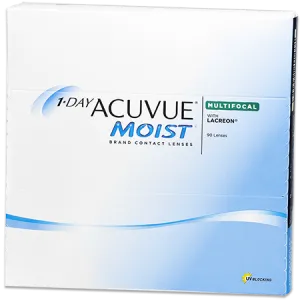
1-DAY ACUVUE® MOIST Multifocal
Read more
Product Overview
1-Day ACUVUE® MOIST MULTIFOCAL Contact Lenses are uniquely designed to provide crisp, clear, reliable vision at all distances enabling your presbyopic patients to continue to see distance, intermediate and near tasks. Patients can continue wearing contact lenses to do the things they love.
- #1 selling Daily Disposable Contact Lens Brand in the World.
- Blocks approximately 97% of UVB and 82% UVA rays.
- Uses unique Dual Action Technology that helps keep moisture in and irritation out.
- 4 out of 5 patients are fit successfully with one or fewer adjustment.
In a year-long observational study, 1-Day ACUVUE® MOIST has no serious or infiltrative events. Extremely low incidence of ocular adverse events, with only 3 non-significant contact lens-related events.
Key Message for Patients
- Precise fit for patients with presbyopia
- The ONLY multifocal lens that addresses the natural variation in pupil size according to age and refractive power for a superior vision experience
- Available in daily wear
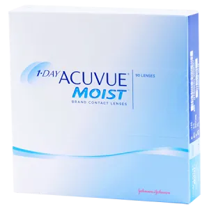
1-DAY ACUVUE® MOIST
Read more
1-Day ACUVUE® MOIST provides enhanced hydration by helping to keep moisture in and irritation out. LACREON® Technology with an embedded wetting agent creates a long-lasting cushion of moisture.
KEY FEATURES
- A daily disposable contact lens that keeps moisture in and irritation out. Available with correction for near and farsighted prescriptions.
- Daily disposable contacts available in 30 or 90 lenses per box.
- One of the highest levels of UV protection available in a daily disposable contact lens.*
- LACREON® Technology provides a long-lasting cushion of moisture for exceptional comfort.
*UV-absorbing contact lenses are NOT substitutes for protective UV-absorbing eyewear such as UV-absorbing goggles or sunglasses because they do not completely cover the eye and surrounding area. You should continue to use UV-absorbing eyewear as directed.
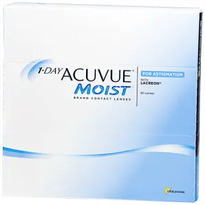
1-DAY ACUVUE® MOIST for ASTIGMATISM
Read more
Product Overview
Proven performance you can trust - 1-DAY ACUVUE® MOIST integrates premium EYE-INSPIRED™ Innovations for an exceptional vision experience within reach.
1-DAY ACUVUE® MOIST makes Success Simplified™
- Unbeaten in comfort in its category2†
- An ACUVUE® experience within reach
- Available in a full family of lenses to fit almost any patient
1-DAY ACUVUE® MOIST for ASTIGMATISM
- Covers 87% of astigmatic eyes with 2260 parameters3
- Built-in BLINK STABILIZED® Design for a consistent and clear vision experience with eyelid stabilization zones working synergistically with the eyelid to maintain the correct position4‡
Key Message for Patients
BLINK STABILIZED® Design helps provide clear and stable vision so you can enjoy your regular activities.4‡
1-DAY ACUVUE® MOIST integrates premium EYE-INSPIRED™ Innovations for an exceptional vision experience within reach:1
- BLINK STABILIZED® Design for astigmatism
- Antioxidants to support comfort1
- UV-blocking for eye health1§,¶
- Moisture-infused for hydration1
- Invisible edge for comfort1
WARNING: UV-absorbing contact lenses are NOT substitutes for protective UV-absorbing eyewear such as UV- absorbing goggles or sunglasses because they do not completely cover the eye and surrounding area. You should continue to use UV-absorbing eyewear as directed. NOTE: Long-term exposure to UV radiation is one of the risk factors associated with cataracts. Exposure is based on a number of factors such as environmental conditions (altitude geography cloud cover) and personal factors (extent and nature of outdoor activities). UV-blocking contact lenses help provide protection against harmful UV radiation. However clinical studies have not been done to demonstrate that wearing UV-blocking contact lenses reduces the risk of developing cataracts or other eye disorders. Consult your eye care practitioner for more information.
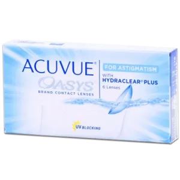
ACUVUE OASYS® for ASTIGMATISM
Read more
BLINK STABILIZED® Design helps minimize shifting and helps keep vision crisp, clear and stable all day long—even for people with an active lifestyle.
KEY FEATURES
- Exceptional comfort meets visual stability in these contacts for astigmatism - when objects are blurry and shadowed at all distances, often accompanied by near or farsightedness.
- ACUVUE® OASYS® for Astigmatism 2-Week contact lenses are available 6 lenses per box.
- The highest level of UV protection‡ available in a contact lens.
- HYDRACLEAR® PLUS technology helps to stabilize the tear film, minimizing dryness and maintaining moisture.
*UV-absorbing contact lenses are NOT substitutes for protective UV-absorbing eyewear such as UV-absorbing goggles or sunglasses because they do not completely cover the eye and surrounding area. You should continue to use UV-absorbing eyewear as directed.
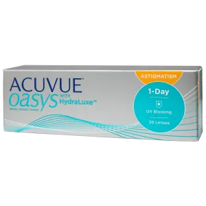
ACUVUE OASYS® 1-Day for Astigmatism
Read more
ACUVUE OASYS® 1-DAY for ASTIGMATISM Brand Contact Lenses are designed with Hydraluxe™ Technology to help make the feeling of tired eyes a thing of the past. The design of these daily contacts for astigmatism also help to provide clear, consistent, stable vision all day long—whether you’re relaxing on the couch or playing sports.
KEY FEATURES
- These daily disposable contact lenses for astigmatism provide exceptional performance and helps to make the feeling of tired eyes a thing of the past.
- Daily disposable contact lenses for astigmatism available in convenient 30-day packs.
- The highest level of UV protection available in a contact lens.*
- Design of the contact harnesses the power of natural eyelid movements to help keep the lens in the correct position. You’ll enjoy clear, consistent, stable vision all day long—whether you’re relaxing on the couch or playing sports.
*UV-absorbing contact lenses are NOT substitutes for protective UV-absorbing eyewear such as UV-absorbing goggles or sunglasses because they do not completely cover the eye and surrounding area. You should continue to use UV-absorbing eyewear as directed.
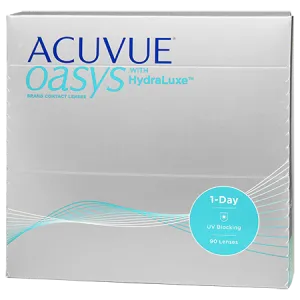
ACUVUE OASYS® 1-Day with HydraLuxe
Read more
ACUVUE OASYS® 1-DAY is designed with HydraLuxe™ Technology to help keep your eyes feeling comfortable throughout the demands of your day. This contact lens has tear-like properties that work with your natural tear film each day, providing all-day performance and excellent comfort, vision and handling.
KEY FEATURES
- If your eyes feel tired from staring at digital devices or working in challenging environments, this lens can help with your demanding days. Available with correction for near and farsighted prescriptions.
- Daily disposable contact lenses available in convenient 90-day packs.
- The highest level of UV protection available in a contact lens.*
- Experience all-day comfort, vision and handling with our exclusive HydraLuxe™Technology. This contact lens has tear-like properties that work with your natural tear film, providing all-day comfort and performance.
*UV-absorbing contact lenses are NOT substitutes for protective UV-absorbing eyewear such as UV-absorbing goggles or sunglasses because they do not completely cover the eye and surrounding area. You should continue to use UV-absorbing eyewear as directed.
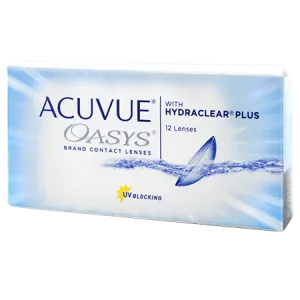
ACUVUE OASYS® 2-Week
Read more
Product Overview
ACUVUE® OASYS is the #1 selling contact lens brand in the world.
Almost 1 in 3 new spherical contact lens wearers drop out in the first year, and comfort issues are the top reason.1 You can trust the brand family of 2-week reusable contact lenses that has never been beaten in comfort in 20 clinical studies.
Start your new reusable contact lens patients in
ACUVUE® OASYS Brand with HYDRACLEAR® PLUS Technology Contact Lenses:
- ACUVUE® OASYS Brand with HYDRACLEAR® PLUS Technology family of 2-week reusable contact lenses is unbeaten in comfort across 20 clinical studies.
- ACUVUE® OASYS is the #1 selling contact lenses in the world.
- ACUVUE® OASYS Brand with HYDRACLEAR® PLUS Technology blocks greater than 90% of UVA rays and greater than 99% of UVB rays, meeting the strictest UV-blocking requirements, offering the highest levels of UV blocking available in contact lenses.
- HYDRACLEAR® PLUS Technology embeds tear-like molecules (PVP) that mimic the mucins found in tear film to help support a stable tear film.
Key Message for Patients
- ACUVUE® OASYS Brand with HYDRACLEAR® PLUS Technology family of 2-week reusable contact lenses is unbeaten in comfort across 20 clinical studies.
- ACUVUE® OASYS is the #1 selling contact lens in the world.
- ACUVUE® OASYS Brand with HYDRACLEAR® PLUS Technology blocks greater than 90% of UVA rays and greater than 99% of UVB rays, meeting the strictest UV-blocking requirements, offering the highest levels of UV blocking available in contact lenses.
- ACUVUE™ RevitaLens Multi-Purpose Disinfecting Solution is a great match with ACUVUE® OASYS Brand with HYDRACLEAR® PLUS Technology reusable contact lenses – it’s a tried and tested combination you can rely on for exceptional disinfection and all-day comfort.
WARNING: UV-absorbing contact lenses are NOT substitutes for protective UV-absorbing eyewear such as UV-absorbing goggles or sunglasses because they do not completely cover the eye and surrounding area. You should continue to use UV-absorbing eyewear as directed. NOTE: Long-term exposure to UV radiation is one of the risk factors associated with cataracts. Exposure is based on a number of factors such as environmental conditions (altitude geography cloud cover) and personal factors (extent and nature of outdoor activities). UV-blocking contact lenses help provide protection against harmful UV radiation. However clinical studies have not been done to demonstrate that wearing UV-blocking contact lenses reduces the risk of developing cataracts or other eye disorders. Consult your eye care practitioner for more information.
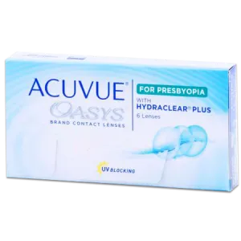
ACUVUE OASYS® for PRESBYOPIA
Read more
Product Overview
ACUVUE OASYS® for Presbyopia is a multifocal contact lens that combines a unique optical design with the exceptional comfort of HYDRACLEAR® PLUS Technology. The result is a multifocal lens that can keep up with patients who are on the go.
- Uses increased network bonding to mimic mucins.
- Increased lens diameter to help ensure full limbal coverage during blinking.
- Blocks >90% of UVA and >99% of UVB rays.
This multifocal contact lens combines the unique optical design of STEREO PRECISION TECHNOLOGY™ and the exceptional comfort of HYDRACLEAR® PLUS Technology. The result is balanced vision near, far and in-between, along with remarkable comfort.
Key Message for Patients
- Two weeks of comfortable wear
- Remarkable comfort
- Great for patients who are on the go
WARNING: UV-absorbing contact lenses are NOT substitutes for protective UV-absorbing eyewear such as UV-absorbing goggles or sunglasses because they do not completely cover the eye and surrounding area. You should continue to use UV-absorbing eyewear as directed. NOTE: Long-term exposure to UV-radiation is one of the risk factors associated with cataracts. Exposure is based on a number of factors such as environmental conditions (altitude, geography, cloud cover) and personal factors (extent and nature outdoor activities). UB-blocking contact lenses help provide protection against harmful UV radiation. However, clinical studies have not been done to demonstrate that wearing UV-blocking contact lenses reduces the risk of developing cataracts or other disorders.
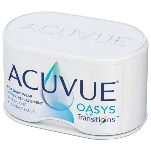
ACUVUE OASYS® with Transitions
Read more
Product Overview
ACUVUE® OASYS with Transitions™ Light Intelligent Technology™ is the first-of-its-kind contact lens to deliver superior visual performance your patients can see and feel. This lens combines the proven comfort of ACUVUE® with seamless adaptation to light for superior visual performance, day to night.
Key Message for Patients
Some of the many benefits this contact lens provides to your patients:
Reduces stressful impact of bright light.
Reduces haloes by up to 18%† and starbursts by up to 28% at night.
Seamlessly adapts to light, indoors and out.
Blocks up to 15% of blue light indoors and up to 55% outdoors, where your patients need it most.
ACUVUE® OASYS with Transitions™ was preferred nearly 3 to 1 over the leading reusable contact lens.
WARNING: UV-absorbing contact lenses are NOT substitutes for protective UV-absorbing eyewear such as UV-absorbing goggles or sunglasses because they do not completely cover the eye and surrounding area. You should continue to use UV-absorbing eyewear as directed. NOTE: Long-term exposure to UV radiation is one of the risk factors associated with cataracts. Exposure is based on a number of factors such as environmental conditions (altitude, geography, cloud cover) and personal factors (extent and nature of outdoor activities). UV-blocking contact lenses help provide protection against harmful UV radiation. However, clinical studies have not been done to demonstrate that wearing UV-blocking contact lenses reduces the risk of developing cataracts or other eye disorders. Consult your eye care practitioner for more information.
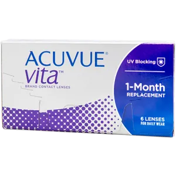
ACUVUE VITA®
Read more
Don’t blame yourself for your monthly contact lens discomfort, it could be your lenses. As the month goes on, you might be using rewetting drops, taking breaks, or removing your lenses to deal with the discomfort. If this sounds familiar, NEW ACUVUE® VITA® Brand with HydraMax™ Technology might be the right lenses for you.
KEY FEATURES
- Monthly contact lenses designed for reliable, superior comfort. New ACUVUE® VITA® delivers on weeks 1, 2, 3 and 4 by maximizing and maintaining hydration throughout the lens.
- ACUVUE® VITA® lenses are available in 6 lenses per box.
- The highest level of UV protection available in a contact lens.*
- HydraMax™ Technology helps maximize and maintain hydration throughout the lens—providing lasting comfort throughout the month.
*UV-absorbing contact lenses are NOT substitutes for protective UV-absorbing eyewear such as UV-absorbing goggles or sunglasses because they do not completely cover the eye and surrounding area. You should continue to use UV-absorbing eyewear as directed.
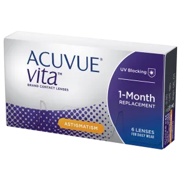
ACUVUE VITA® for Astigmatism
Read more
Product Overview
ACUVUE® VITA® for ASTIGMATISM with HydraMax™ Technology is a monthly toric lens for patients who want a full month of comfortable wear from their lenses. It is a non-coated silicone hydrogel formulation balanced to help maximize and maintain hydration throughout the lens. It also features BLINK STABILIZED® Design which functions with the natural eyelid movements to help keep the lens in the correct position even with head and eye movements.
- ACUVUE® VITA® Brand Contact Lenses for ASTIGMATISM provides reliable, consistent performance all month long.
- 3 out of 4 ACUVUE® VITA® for ASTIGMATISM wearers report crisp, clear, stable vision – even with head and eye movements.
- ACUVUE® VITA® for ASTIGMATISM is the ONLY monthly lens with Class1 UV Blocking.
ACUVUE® VITA® for ASTIGMATISM offers around the clock coverage where you need it most in low minus, plano to -6.00 D, through -1.75 DC. The ACUVUE® VITA® Family provides coverage for nearly 96% of spherical and astigmatic eyes.
Key Message for Patients
- Exceptional vision and reliable comfort all month for patients with astigmatism
- Includes technology that maximizes and maintains hydration throughout the lens
- Includes BLINK STABILIZED® Design that helps keep the lens in place
WARNING: UV-absorbing contact lenses are NOT substitutes for protective UV-absorbing eyewear such as UV-absorbing goggles or sunglasses because they do not completely cover the eye and surrounding area. You should continue to use UV-absorbing eyewear as directed. NOTE: Long-term exposure to UV radiation is one of the risk factors associated with cataracts. Exposure is based on a number of factors such as environmental conditions (altitude, geography, cloud cover) and personal factors (extent and nature of outdoor activities). UV-blocking contact lenses help provide protection against harmful UV radiation. However, clinical studies have not been done to demonstrate that wearing UV-blocking contact lenses reduces the risk of developing